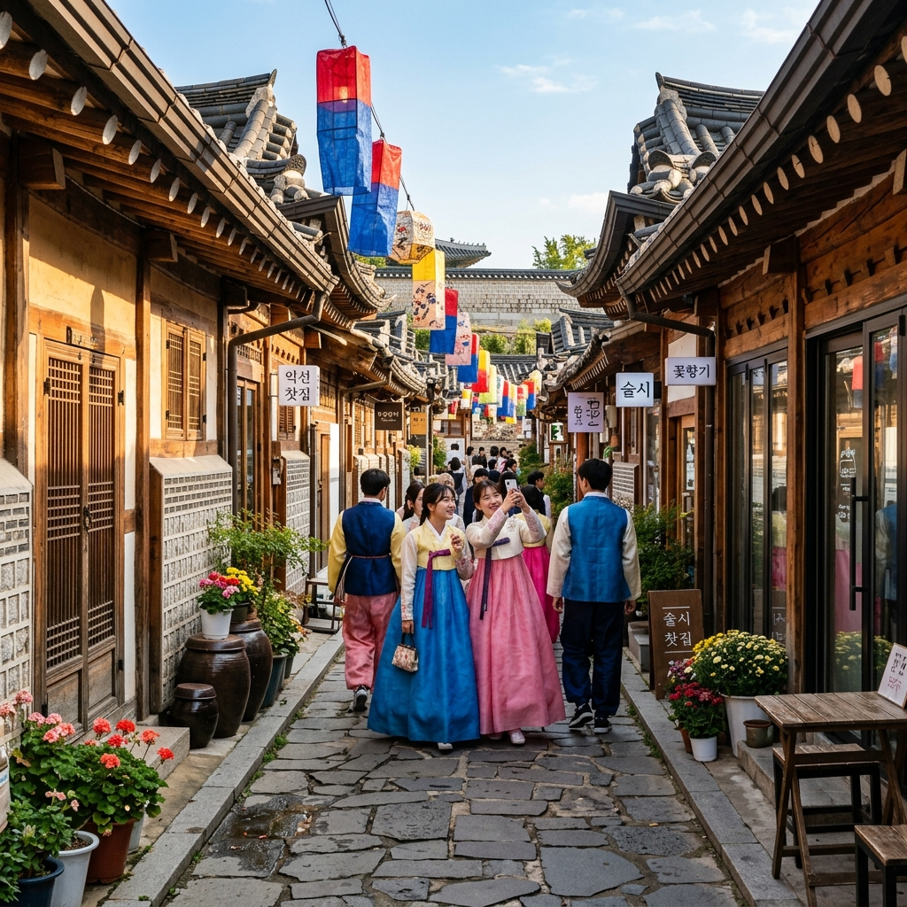
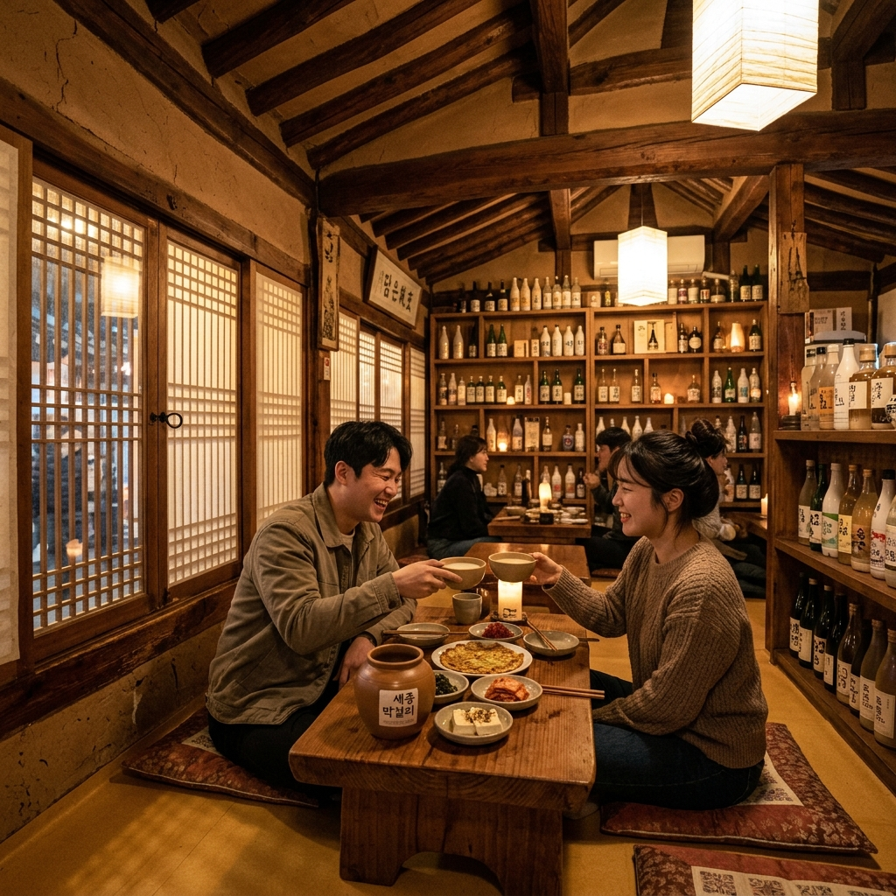
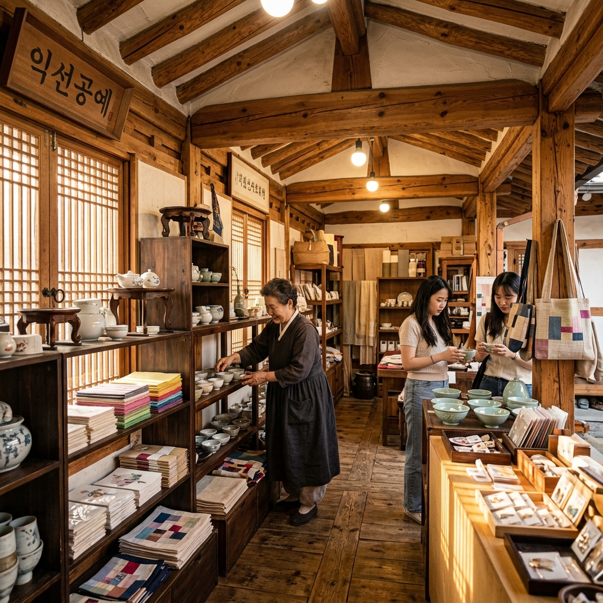

익선동은 서울 종로구에 위치한 작은 동네입니다. 정식 행정구역 명칭은 '익선동'이지만, 요즘은 '익선동 한옥마을'이라는 이름으로 더 많이 알려져 있습니다.
익선동의 역사는 1920년대로 거슬러 올라갑니다. 당시 정세권이라는 건축가가 당시 왕족과 양반들이 살던 대형 기와집 터를 사들여 중산층을 위한 소형 도시형 한옥을 조성했습니다. 이것이 우리나라 최초의 도시형 한옥 개발 사례입니다. 정세권은 '집장사'라는 호칭을 듣기도 했지만, 사실상 당시 서울에서 최초로 한옥을 상품화한 선구자적 인물입니다.
특이한 점은 익선동의 한옥들이 일반적인 지방 한옥과는 다른 '도시형 한옥'이라는 점입니다. 마당을 최소화하고 건물 면적을 극대화한 형태로, 골목을 경계로 집이 빼곡하게 붙어있는 구조입니다. 이런 구조 덕분에 골목을 걸으면 마치 한옥 마을 속을 헤매는 듯한 미로 같은 경험을 할 수 있습니다.
익선동은 1990~2000년대를 거치며 많은 주민이 떠나고 빈집이 늘어났습니다. 재개발 논의가 이어지다 2015년경 문화재 보존 결정이 내려지면서, 오히려 역발상으로 한옥의 외관을 살리면서 내부를 현대적 상업 공간으로 개조하는 '익선다다 프로젝트'가 시작됐습니다. 그 이후 카페, 전통주 바, 편집샵들이 하나둘 들어서면서 지금의 익선동이 완성됐습니다.
2026년 현재 익선동은 서울을 방문하는 외국인 관광객에게도 빠지지 않는 코스가 됐습니다. 특히 한복을 입고 한옥 골목을 걷는 경험이 독특하여, 한복 대여점도 인근에 여러 곳 운영되고 있습니다.
익선동을 처음 방문하면 골목이 복잡하게 얽혀 있어 방향을 잃기 쉽습니다. 크게 세 구역으로 나뉜 골목의 특성을 파악하면 효율적인 탐방이 가능합니다.
익선동의 골목 탐방은 정해진 루트보다는 마음 가는 대로 들어가 보는 것이 정답입니다. 예상치 못한 골목 끝에서 발견하는 작은 공방, 오래된 한옥 담벼락, 누군가의 옥상 정원 — 이런 예상치 못한 발견이 익선동 여행의 진짜 재미입니다.
익선동의 면적은 매우 작습니다. 전체를 꼼꼼히 둘러봐도 도보로 1시간이면 충분히 돌아볼 수 있을 정도입니다. 그렇기에 빠르게 보고 떠나기보다는 카페 한 곳에서 여유롭게 머물다가 천천히 골목을 돌아보는 방식이 이 동네와 잘 어울립니다.
익선동 카페의 공통점은 하나입니다. 바깥에서 보면 오래된 한옥이지만, 문을 열고 들어가면 세련된 인테리어가 기다린다는 것입니다. 전통과 현대의 조화가 가장 잘 구현된 공간들을 소개합니다.
| 카페명 | 특징 | 추천 메뉴 | 혼잡도 |
|---|---|---|---|
| 식물성 | 한옥 뜰에 식물이 가득한 정원형 카페 | 계절 음료, 직접 만든 케이크 | ★★★★☆ (웨이팅) |
| 익선다다 | 익선동 리노베이션 1세대, 복합 공간 | 카페 + 편집샵 + 전시 | ★★★☆☆ |
| 봉봉방앗간 | 전통 떡과 한과를 현대적으로 재해석 | 인절미 라떼, 전통 떡 세트 | ★★★★☆ |
| 오랫만 | 한옥 마당을 살린 야외 좌석 카페 | 계절 과일 에이드, 크림라떼 | ★★★☆☆ |
| 익선점빵 | 레트로 구멍가게 컨셉, 추억의 과자 판매 | 추억 과자 세트, 구슬아이스크림 | ★★★★☆ |
익선동 카페 중 식물성은 특히 봄·여름 시즌에 방문하면 뜰 가득한 초록 식물들과 함께 환상적인 공간을 경험할 수 있습니다. 좁은 한옥 뜰에 200여 종의 식물을 심어 밀림처럼 꾸민 공간으로, 실내와 야외의 경계가 모호한 독특한 분위기가 특징입니다. 날씨 좋은 날 야외 좌석을 잡으면 서울 도심에서 숲속 카페 기분을 낼 수 있습니다.
봉봉방앗간은 전통 한과와 현대적 카페 음료를 결합한 공간입니다. 인절미 라떼는 한국 음료가 낯선 외국인 방문객들도 "맛있다"는 말을 자연스럽게 하게 만드는 메뉴입니다. 한국 전통 음식 문화를 현대적으로 재해석한 사례로, 음식 문화 연구자들에게도 주목받는 공간입니다.
익선동의 야간 얼굴은 전통주 골목입니다. 해가 기울기 시작하는 오후 5~6시부터 골목에는 또 다른 에너지가 흐릅니다. 낮에는 카페 손님들로 붐비던 골목이 저녁에는 전통주 한 잔을 즐기러 온 직장인과 여행자들로 바뀝니다.
익선동 전통주 골목의 매력은 다양한 국산 전통주를 한 자리에서 경험할 수 있다는 점입니다. 막걸리, 청주, 소주, 약주, 과실주 등 전국 각 지방의 전통주들이 메뉴판에 가득합니다. 주류 판매업 가이드에 따른 안주와 함께 즐기는 전통주 한 잔은 익선동 여행의 백미입니다.
익선동에서 전통주 문화를 가장 잘 체험할 수 있는 공간으로는 온지가 손꼽힙니다. 한옥 구조를 최대한 살린 인테리어에 전국 100여 종 이상의 전통주를 보유하고 있으며, 친절한 설명과 함께 전통주 시음을 즐길 수 있습니다. 전통주 페어링 코스도 운영하고 있어 음식과 술을 함께 즐기는 미식 경험을 제공합니다.
전통주와 함께하는 안주도 익선동의 자랑입니다. 전통 한식을 현대적으로 재해석한 소반(작은 밥상) 형태의 안주가 대부분의 전통주 바에서 제공됩니다. 가격대는 안주 1개에 8,000~18,000원 수준입니다.

익선동에서 도보 5분이면 조선 왕실의 역사를 담은 운현궁에 닿습니다. 운현궁은 흥선대원군의 사저이자 고종 황제가 어린 시절을 보낸 곳으로, 우리나라 역사의 격동기를 담고 있는 공간입니다.
운현궁의 입장료는 성인 기준 무료입니다(서울시 관리 유적). 건물 내부는 조선 후기 사대부가의 생활을 재현한 전시를 볼 수 있으며, 넓은 정원은 사계절 내내 산책하기 좋습니다. 특히 봄에는 해당화와 목련이, 가을에는 단풍이 아름답습니다.
운현궁과 함께 연계할 수 있는 역사 코스를 소개합니다.
익선동 인근의 창덕궁은 유네스코 세계문화유산으로 지정된 조선의 이궁(별궁)입니다. 익선동과 불과 5분 거리에 위치하며, 종합 관람권(성인 3,000원)을 구입하면 창덕궁과 후원을 함께 관람할 수 있습니다. 후원 관람은 가이드 동반 예약제로 운영되므로 사전 인터넷 예약이 필수입니다.
종묘는 조선 왕들의 위패를 모신 곳으로, 익선동 바로 옆에 있습니다. 일반 관람은 매주 토요일 자유 관람이 가능하며, 그 외에는 해설사 동반 정시 관람으로만 입장할 수 있습니다. 종묘의 고요한 분위기와 익선동의 활기찬 골목이 바로 붙어 있다는 사실이 서울의 독특한 매력입니다.
익선동은 골목 전체가 인생샷 배경입니다. 특별히 준비하지 않아도 한옥 담벼락 앞에 서면 그 자체로 훌륭한 사진이 됩니다. 그러나 특히 놓치지 말아야 할 포인트들을 정리했습니다.
한복 착용 사진은 익선동에서 가장 인기 있는 테마입니다. 인근 한복 대여점(종로3가역 주변)에서 1~2시간 대여 기준 약 20,000~30,000원에 한복을 빌릴 수 있습니다. 한복을 입으면 창덕궁, 경복궁 등 고궁 입장이 무료가 되는 혜택도 있으니 적극 활용하세요.
익선동에는 어디서도 볼 수 없는 독특한 소품들을 판매하는 작은 가게들이 많습니다. 대형 쇼핑몰에서는 절대 찾을 수 없는, 국내 독립 작가들의 수공예품과 빈티지 소품들입니다.
익선다다 편집샵은 익선동 리노베이션을 주도한 익선다다가 운영하는 복합 공간의 편집샵입니다. 한국의 전통 패턴과 색감을 현대 디자인에 적용한 소품들이 가득합니다. 도자기, 패브릭 소품, 문구류까지 다양한 제품을 판매합니다.
익선동을 돌아다니다 보면 간판도 없이 작은 한옥 방에서 수공예품을 만드는 장인들을 만날 수 있습니다. 이런 공방에서 직접 제품을 구매하는 경험은 익선동 쇼핑의 하이라이트입니다. 가격은 일반 상점보다 비싸지만, 세상에 하나뿐인 수제품이라는 가치가 있습니다.

익선동은 대중교통 접근이 매우 편리합니다. 지하철 1호선·3호선·5호선이 만나는 종로3가역 바로 인근에 있어, 서울 어디서든 쉽게 올 수 있습니다.
| 출발지 | 교통수단 | 소요시간 | 환승 여부 |
|---|---|---|---|
| 강남역 | 지하철 2호선 → 3호선 환승 | 약 25분 | 을지로3가 환승 |
| 홍대입구 | 지하철 2호선 → 1호선 환승 | 약 30분 | 시청 환승 |
| 명동 | 도보 15분 또는 버스 | 15~20분 | 환승 없음 |
| 경복궁 | 지하철 3호선 | 약 10분 | 환승 없음 |
자가용 방문 시 익선동 인근 주차는 매우 불편합니다. 골목 자체에 주차 공간이 없으며 주변 공영주차장도 제한적입니다. 가장 가까운 공영주차장은 종묘 주변 주차장으로, 30분당 약 1,500원 수준입니다. 그러나 주말에는 이마저도 만차가 되는 경우가 많으므로 대중교통 이용을 강력히 권장합니다.
익선동은 사계절, 낮과 밤이 모두 다른 얼굴을 가진 동네입니다. 어떤 목적으로, 어떤 시간대에 방문하느냐에 따라 전혀 다른 경험을 할 수 있습니다.
봄(3~5월) 낮: 한옥 담장 위로 피어난 꽃과 함께 한복 인생샷 촬영에 최적. 식물성 카페의 봄 메뉴(딸기 라떼, 벚꽃 음료 등)를 즐기며 산책하는 코스를 추천합니다.
여름(6~8월) 저녁: 더운 낮보다는 해가 지고 서늘해지는 저녁 7시 이후 방문이 최적입니다. 전통주 바에서 차가운 막걸리 한 잔과 함께 골목의 밤바람을 즐기는 여름 익선동은 특별한 경험입니다. 조명이 켜진 한지 창호가 만드는 노란 불빛이 사진으로 담기도 아름답습니다.
가을(9~11월): 조용히 걷기 좋은 계절입니다. 10월 이후 운현궁 정원의 단풍과 함께 익선동 골목 탐방을 연계하면 완벽한 가을 나들이가 됩니다. 이 시기에는 카페들이 가을 한정 메뉴를 선보이므로 방문 전 각 카페 인스타그램을 확인해보세요.
겨울(12~2월): 평일 낮 방문 시 가장 한산합니다. 나 홀로 한옥 골목 탐방과 따뜻한 한옥 카페 속에서의 커피 한 잔은 겨울 익선동의 진한 매력입니다. 크리스마스 전후로는 골목에 작은 조명 장식이 더해져 낭만적인 분위기를 연출합니다.